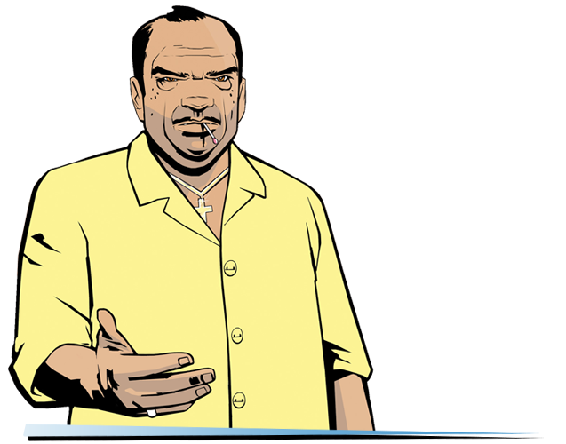

Frequently Asked Questions
In this section, you may be able to find answers to some questions related to the build (the list will be updated).
Can I install third-party modifications to the build?
Yes, but please note that this can cause various technical problems/issues and you will lose our support in these matters.
Which Windows versions are supported?
Windows 7 SP1, 8 and 10.
Will there be Vice City Multiplayer, Multi Theft Auto or GTA Connected support?
Not planned.
The game is very laggy
- In file
Grand Theft Auto Vice City/scripts/GTA3.WidescreenFix.iniset for parameterForceMultisamplingLevelvalue0. - Delete file
Grand Theft Auto Vice City/mss/scrlog.asi.
WARNING! If you'll complete a second step - there can be problems with support!
Game doesn't launch / When resolution setting identical to the resolution of the monitor, the game freeze/crashes / Cannot find "1x1x1" video mode.
- In properties of
gta-vc.exego toCompatibility, selectChange high DPI settingsand turn ON following parameters: "Program DPI: when I open this program" "High DPI scaling override:Application". - In the file
Grand Theft Auto Vice City/scripts/GTAVC.WidescreenFix.iniin the parametersResXandResYset the resolution values of your monitor. Example:ResX = 1920ResY = 1080 - Install
DirectPlay. - Delete file
My Documents/GTA Vice City User Files/gta_vc.set. - Set the
CompatibilitywithWindows XPorWindows 7.
Intro movies don't work.
Set Compatibility with Windows XP Service Pack 3 and install codecs.
In the game, instead of all the radio stations, "Wildstyle" are playing.
- Set to all files in folder
Grand Theft Auto Vice City(besides .log files) valueRead-only. - Move file
Grand Theft Auto Vice City/ReadMe/install.battoGrand Theft Auto Vice City. - Run
Grand Theft Auto Vice City/install.bat (as administrator)and wait until it's finish work. - Reboot your system.
After installing build, my saves made on Steam-versions stopped working.
A Guide to Converting Saves:
- Go to gtasnp.com and upload your save file there (located in
My Documents/GTA Vice City User Files/GTAVCsf1.b- where the digit 1 in the file name indicates the slot number). - After uploading the file to the site, expand the Modifications section.
- Change the value of
Release VersiontoRetail(Windows) or Steam (Mac OS X). - Below choose one of the eight slots in which you want to save your file and put it back in
My Documents/GTA Vice City User Files.
How do I activate the tool tips with the PS2 gamepad buttons?
In the Grand Theft Auto Vice City/mss/GInputVC.ini file, set the "PlayStationButtons" value to 1.
When I try to extract files from the archive, it gives an error: Can not open file or Archive corrupted.
Update your archiver or use another.
How to enable/disable the "black borders" in cutscenes?
In Display Setup (in game) turn on "Wide screen" feature.
When launched via Steam, the game crashes without error after the intro clips.
Make sure that the game and Steam are installed on the same drive.
How to setup controls on gamepad?
In the mss/GinputVC.ini file, you need the "ControlsSet" option.
All available control "sets" can be found in the file ReadMe/Ginput docs/GAME CONTROLS FULL LIST.txt.
I have a resolution different than 16:9, the menu screens and loadscreens do not fit on the monitor.
Open file Scripts/GTAVC.WidescreenFix.ini, find ForceAspectRatio and
FrontendAspectRatio parameters, then change it's value to your aspect ratio.
Example:
ForceAspectRatio = 16:10
FrontendAspectRatio = 16:10
Which languages are supported by this build?
English, French, German, Italian, Spanish and Russian.
How to activate Windowed Mode?
Put files ReadMe/Windowed Mode/wndmode.asi & wndmode.ini to scripts and you will have bordersless windowed mode.
I like to return a blur like on PS2 version.
Delete file Scripts/SharpTrails.asi.
Does Updated Classic contain Haitians friendly content changes?
No, the game is presented in it's original state.
I like to remove 'yellow' filter.
In Display Setup (in game) turn off "Trails" feature.
When the game starts, the window with the message "AppId is not configured." comes out.
Delete the file Grand Theft Auto Vice City/mss/GInputVC.asi.
Note: After this, support for gamepad will be lost.
Does this build contains all tracks that was cut?
For GTA Vice City they never cut any tracks. Build has all original audio and tracks from game.
An error before startup: "Unable to load rundll32exefix.asi. Error: 193
Move rundll32exefix.asi file from scripts folder to mss folder.
What version of the game is the Updated Classic based on?
1.0
Game crashing at loading screens.
Make sure that your anti-virus didn't delete any game files. Add a game folder to exceptions and reinstall build.
The game crashed when trying to connect a gamepad.
Install latest version of Ginput plugin.
Remove GinputVC.asi and Ginput.ini files from Grand Theft Auto Vice City/mss and install new ones into Grand Theft Auto Vice City/scripts.
Warning: After updating the plugin you will experience performance troubles on the end credits (FPS will be around 10-15).
All weapons in game are invisible.
Download this archive, unpack it and move all content from put in game folder to Grand Theft Auto Vice City folder.
There is a white lines on characters.
This is a Widescreen Fix's anti-aliasing issue. You can disable it in Grand Theft Auto Vice City/scripts/GTAVC.WidescreenFix.ini file, set ForceMultisamplingLevel to 0.
